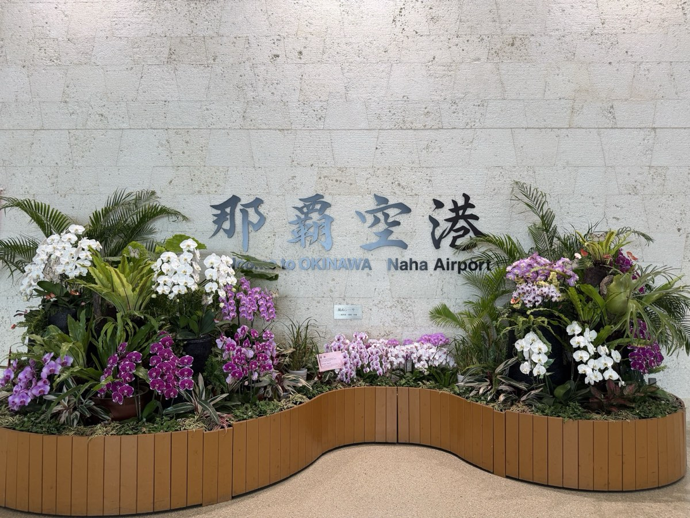

空港のレンタカー送迎は、到着便が重なると混み合います。HANDYMAN那覇空港店なら、空港・赤嶺駅・ホテルの3か所から受け取り方を選べます。
受け取り方法を選んで予約する那覇空港の構内では、条例によりレンタカーの受け渡しができません。どのレンタカー会社でも、空港から送迎バスで営業所へ移動して手続きをする形になります。連休や夏休みなど到着便が集中する時期は、送迎バスや営業所の受付が混み合うことがあります。
| 受け取り方 | 流れ | 向いている人 |
|---|---|---|
| 空港から無料送迎 | 空港1階「出口4」→横断歩道を渡って右の「レンタカー送迎バス 11-B のりば」から乗車。空港発は毎時00分（9:00〜19:00） | 到着時刻が00分に近い方、荷物が多い方 |
| 赤嶺駅から無料送迎 | ゆいレールで那覇空港駅から1駅の赤嶺駅へ。赤嶺駅から営業所へ無料送迎 | 空港の送迎バスのりばを避けたい方 |
| ホテルへお届け | ゆいレールやタクシーでホテルへ。車はホテルで受け取り（那覇市・豊見城市の対象エリア内） | 到着日は車を使わない方、子ども連れで移動を減らしたい方 |
送迎・お届けの細かな時間は、予約後に公式LINEで到着便とあわせてご案内します。
到着便と時間をLINEで伝えておくと、送迎のご案内がスムーズです。
免許証の確認などは公式LINEで事前に完結。営業所での手続きが短くなります。
到着日は那覇市内だけなら、翌朝ホテルで受け取ると空港での受け取り自体が不要です。
営業所発の空港行きは毎時30分（9:30〜18:30）。最終便が遅い方はホテルでの返却も選べます。
| クラス | 車種の例・定員 | 24時間の目安 |
|---|---|---|
| コンパクト | アクア／ヴィッツ／ノート5名 | ¥2,700〜 |
| セダン／ハイブリッド | プリウス／プリウスα5名 | ¥3,000〜 |
| コンパクトSUV | ライズ／ヤリスクロス5名 | ¥4,500〜 |
| ミニバン | ノア／セレナ8名 | ¥4,500〜 |
| SUV | ハリアー5名 | ¥5,000〜 |
| ミニバン | ノア／ヴォクシー／セレナ 等8名 | ¥5,500〜 |
| プレミアムミニバン | アルファード8名 | ¥7,000〜 |
料金は24時間あたりの基本料金です。繁忙日（年末年始・GW・お盆など）は高くなります。正確な料金・空車は予約画面でご確認ください。